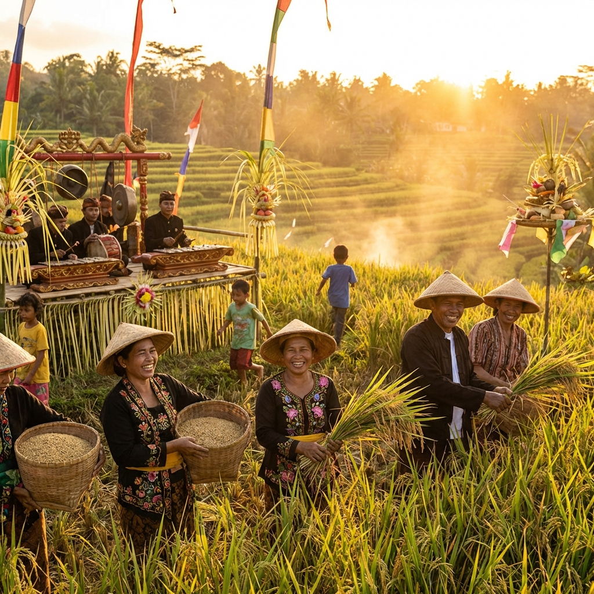

12 JAN 2026
Ekonomi Desa
Panen Raya Padi: Ketahanan Pangan Desa Meningkat
Para petani Desa Kebonagung menyambut musim panen dengan sukacita. Hasil panen tahun ini diprediksi meningkat 20% berkat sistem irigasi baru.
Baca Selengkapnya